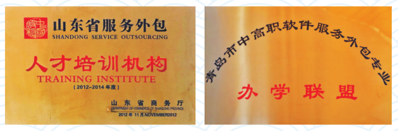

软件技术专业介绍
所有人都应当学习如何编程，学习一门计算机语言，因为它会教你如何思考
———苹果之父 史蒂夫·乔布斯
青岛是我国北方著名的智慧之城、科技之都，信息产业发达，是中国服务外包示范城市10强、中国人工智能产业发展潜力城市20强城市。青岛市2020年获评全国第5个“中国软件特色名城”，正在实施提出软件产业名品、名企、名园、名展、名人“五名”工程，急需大量软件技术专业人才。
【软件外包人才培养】
学院是中国服务外包协会专家委员会副理事长单位、山东省重点服务外包人才培训基地、首批山东省服务外包实训基地。
软件技术专业是国家骨干专业、山东省特色专业，牵头青岛市中高职软件外包专业办学联盟，重点培养软件外包人才，每年有多名学生到外资或合资IT企业就业，并有机会出国深造。
软件技术专业主要培养掌握软件开发的专业知识和方法，具备国际化软件开发、测试、部署的专业技能，能够从事软件开发、Web前端开发、移动应用开发、软件部署与技术支持等工作的高素质技能人才
【省级教学团队】
软件技术教学团队是山东省省级教学团队，拥有山东省教学名师1人、产业教授1名、博士3人，建有柳淑花省级名师工作室1个、技能大师工作室1个。

【优质教学资源】
软件技术专业建有省级精品课程7门、省级精品资源共享课程3门，引入了全球最大的企业级软件公司甲骨文公司（Oracle）的优质教学资源和教育部“1+X”职业技能等级证书认证标准。
【国家援外培训】
软件技术专业承办国家援外培训大数据、云计算与超级计算等方面的培训项目，培训津巴布韦、古巴、牙买加、越南等国家的高级政府官员220余人。
【技能竞赛成绩优】
近两年学生在山东省职业技能大赛移动互联赛项、软件测试赛项、HTML5交互融媒体设计赛项、全国蓝桥杯软件专业人才大赛、山东省高校大学生人工智能大赛、山东省软件设计大赛、山东省大数据分析与挖掘大赛等赛项中均获得优异的成绩，共获全国一等奖1人次、二等奖1人次，全国三等奖2人次，全省一等奖7人次，二等奖17人次，其他省级以上获奖40余人次。
【对口就业薪资高】
软件技术专业毕业生面向软件和信息服务业，从事软件开发（外包）、Web前端开发、移动应用开发及软件部署和技术支持等工作，每年招聘会企业均能提供3:1以上的对口就业岗位。学生毕业生三年后，月平均薪资超过10000元。